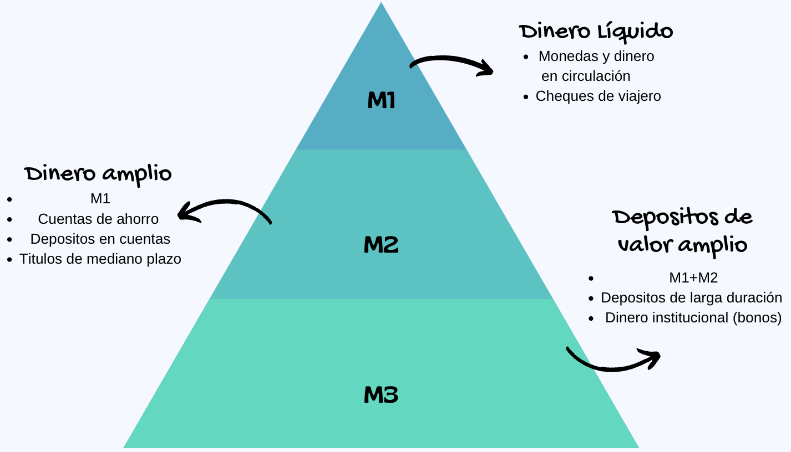
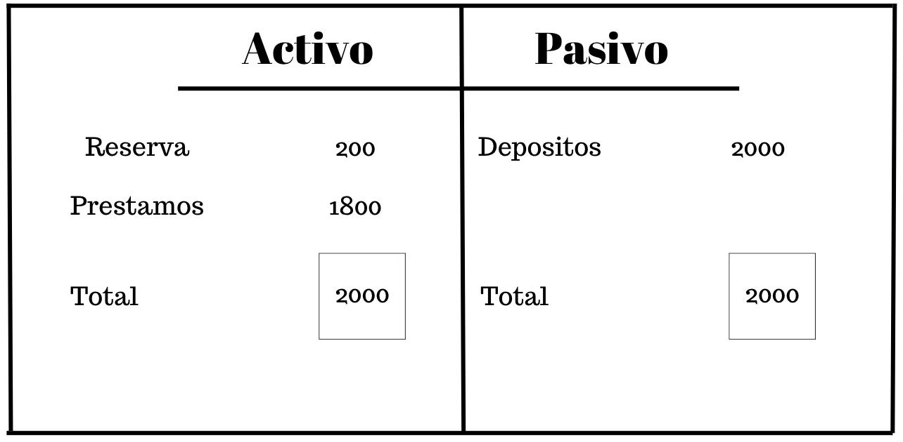

![]()

Principios de Macroeconomía 🫢
Politica Monetaria III
Lo que traimos
- Formalizamos ideas de lo que es el dinero
- Vimos como la política monetaria tiene efectos en la economía
- Inclusive como tiene que ver con la posición de Inflación
La liquidez de las personas tiene en cuenta otras cuestiones que debemos mirar
Recomendación: Educación financiera con: karem Suarez
Lo que traimos
Expansión Monetaria
Expansión Monetaria
Miremos rápidamente un asunto de depósitos en banco (Creación de Dinero)
¿Cómo crean dinero los bancos?
Los bancos llevan sus libros de la siguiente manera:
\[\text{Activo bancario} - \text{Pasivo bancario} ≡ \color{red}{\text{Patrimonio neto del banco}}\]
Expansión Monetaria

Expansión Monetaria
Recuerde que: En muchas economías, los bancos están legalmente obligados a mantener reservas en el Banco Central del país.
El porcentaje de depósitos que un banco debe mantener como reservas se conoce como coeficiente de reservas obligatorias.
Ingreso bancario
Los bancos obtienen ingresos prestando dinero a un tipo de interés superior al que pagan a los depositantes por el uso de su dinero.
Por lo tanto, suelen conceder préstamos hasta el punto en que ya no pueden hacerlo debido a las restricciones del coeficiente de reservas obligatorias.
Entonces, el exceso de reservas de un banco es la diferencia entre sus reservas reales y las reservas legalmente exigidas.
Expansión Monetaria
Cuantos más depósitos reciba un banco, mayores serán sus reservas reales en relación con sus reservas obligatorias.
De este modo, un aumento de las reservas bancarias puede dar lugar a un aumento más que proporcional de la oferta monetaria.
Los economistas denominan multiplicador monetario a la relación entre la variación final de los depósitos y la variación de las reservas que ha provocado dicha variación.
El multiplicador monetario es el múltiplo por el que pueden aumentar los depósitos por cada dólar de aumento de las reservas.
Expansión Monetaria
- Básicamente nos dice por cuántas veces se “multiplicará” un préstamo cuando se gaste en la economía y luego se vuelva a depositar en otros bancos.
\[\begin{aligned} \text{Multiplicador Monetario} = \dfrac{1}{\text{Coeficiente de reserva requerido (%)}} \end{aligned}\]
Expansión Monetaria
- Deposito inicial:
$2000 - Prestamos Banco 1:
$1800= \((1-cr) \times 2000\) - Prestamos Banco 2:
$1620= \((1-cr)^{2} \times 2000\) - Prestamos Banco 3:
$1458= \((1-cr)^{3} \times 2000\) - otros prestamos…
Oferta total de dinero:
\[\left[1+(1-cr)+(1-cr)^{2}+(1-cr)^{3}+ \cdots \times 2000\right]\]
Expansión Monetaria
- Para la equivalencia (usando una regla de Taylor):
\[\text{Expansión}\equiv \dfrac{1}{\text{Coeficiente de reserva}} \times 2000\] Donde cr es el ratio de reservas a depósitos. En nuestro ejemplo: cr=0.1 y M es= $20000.
Ojo!!
Un sistema de reserva parcial crea dinero, pero OJO, NO crea riqueza: Los préstamos bancarios proveen nuevo dinero a los deudores pero al mismo tiempo estos contraen una deuda por el mismo valor.
Preferencias
Preferencias Demanda de dinero
Tener dinero (líquido) no paga intereses, mientras que otros activos financieros sí lo hacen.
Una pregunta crucial:
¿Por qué no depositar algo de dinero en un certificado de depósito, comprar acciones, bonos, etc.?
Preferencias Demanda de dinero
Ya que, al guardar dinero, las personas renuncian al pago de intereses, debe haber beneficios asociados.
De hecho, estos beneficios potenciales pueden resumirse en tres motivos:
Motivo de transacción;
Motivo de precaución;
Motivo especulativo.
Preferencias Demanda de dinero
Empezando por el motivo de las transacciones, tener dinero permite comprar cosas.
“No hay forma de ir a la tienda y pagar la compra con un certificado de deuda pública colombiana, por ejemplo”.
En línea con este primer motivo, mantener saldos en efectivo es también una medida de precaución.
La gente guarda dinero para emergencias, gastos inesperados y compras impulsivas.
Aunque la mayor parte de nuestros gastos habituales son previstos, siempre existe cierta incertidumbre asociada al gasto.
Preferencias Demanda de dinero
Una última razón para mantener dinero es el llamado motivo especulativo.
Y este motivo se encuentra en el centro de la disyuntiva entre el efectivo y otros activos financieros que pagan intereses.
Este motivo se debe a la naturaleza variable de los tipos de interés (rendimientos) de los bonos, las acciones y otras asignaciones potenciales de nuestras tenencias de dinero.
Así, si uno espera que el precio de un bono -o de cualquier activo financiero- baje, estará perdiendo dinero por tenerlo.
Preferencias Demanda de dinero
- Miremos el caso de la especulación:
Ejemplo 1
Carlos compra un bono por valor de 10 millones del gobierno que paga al final de su periodo de madurez un 10% de su valor en 5 años.
El cupón de rentabilidad será de 5 millones (a interés simple)
Vamos a mirar que hay detrás si la tasa de interés se modifica
\[\begin{aligned} \text{Precio de un bono} = \dfrac{\text{Valor Nominal} + \text{Pago del cupón}}{(1 + \text{tasa de interés})^\text{periodo de madurez}} \end{aligned}\]
Preferencias Demanda de dinero
- Pensemos por un momento que la tasa de interés sube al 15%.
\[\begin{aligned} \text{Precio de un bono} = \dfrac{10.000.000 + 5.000.000}{(1 + 0.15)^5}=7.457.651 \end{aligned}\]
Cuidado!
Con un interés arriba del pactado habremos perdido dinero o el bono adquirido habrá perdido valor de compra. Una segunda persona o inversionista con un mismo papel o bono ganaría mas que nosotros por ese evento.
Preferencias Demanda de dinero
- Ahora miremos otro caso, la tasa de interés baja al 5%.
\[\begin{aligned} \text{Precio de un bono} = \dfrac{10.000.000 + 5.000.000}{(1 + 0.05)^5}=11.752.893 \end{aligned}\]
Magnifico!!
Con un interés abajo del pactado habremos ganado dinero o el bono adquirido habrá ganado valor de compra. Una segunda persona o inversionista con un mismo papel o bono ganaría menos que nosotros por ese evento.
Preferencias Demanda de dinero
En realidad, los tipos de interés fluctúan todo el tiempo.
Los inversionistas en bonos buscan continuamente indicios/pistas/información sobre cómo serán los tipos de interés en el futuro para decidir si deben mantener sus inversiones o, por el contrario, mantener dinero líquido.
Cuando los individuos esperan que los precios de los bonos suban, mantienen menos efectivo y compran bonos.
Cuando esperan que los precios de los bonos bajen, tienen más efectivo y venden bonos.
Esta dinámica resume el motivo especulativo para demandar dinero.
Bibliografía
Rivas P., (2005) Teoría Monetaria y Bancaria. Ciudadela Universitaria. MIMEO
Shapiro D., MacDonald D. & Greenlaw S. A., (2024)Principles of Macroeconomics 3e: Official OpenStax. OpenStax
Santetti M., (2023) Lecture notes Course Introduction to Macroeconomics. MIMEO